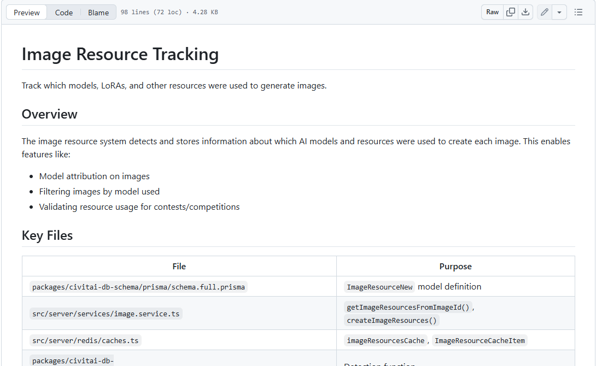

P25-civitai-e1 · 用户自述
匿名A刚开始使用Stable Diffusion，从Civitai看到模型下载和示例，却不理解触发词、LoRA、权重及文件放置；自述局部补手臂多次失败。
2023-10；索引日期 · 观察：2026-09-10
新手单点经历；回复讲解不等于原任务修复。
Civitai 将题材、风格资源与例图聚合，供用户选择站内生成或下载到本地。公开自述包括兴趣创作、站外运行、回站分享，以及对收费和维护的抱怨。使用者也可能发布资源；职业分布、作者收入和付费构成尚无可靠数据。
| 内容使用者 | 内容供给者 | 付款方 |
|---|---|---|
| 选模型、看示例、下载或站内试图的用户；同一人可以兼做作者。 | 上传LoRA、合并模型、例图及参数说明的人；分享作品不自动等于模型作者。 | 购买站内生成或特定资源准入的人，以及为作者功能付费的人；没有可核验账单和各类份额。 |
按任务划分；不推定年龄、职业或收入。 · 有用户线索，尚不足当前充分画像
| 观察点 | 群体占比 |
|---|---|
| 4个可区分用户点 | 未知 |
| 问题 | 具体材料 |
|---|---|
| 任务 | 把DnD、幻想题材或个人想法变成自己愿意保留和分享的图。 |
| 触发 | 看到某种效果，想换成自己的角色或场景。 |
| 希望取得的结果 | 能找到合适模型并掌握必要提示和参数。 |
| 困难 | 模型与LoRA概念多，例图不能直接转成自己的结果。；筛选内容、服务故障与试错影响体验。 |
| 需要的内容 | 模型兼容、触发词、示例参数、失败对照及可复用输入。 |
| 替代方法 | 普通图片搜索、其他生成站或本地Stable Diffusion；是否迁移因人而异。 |
| 持续使用记录 | C、D、E有每天或经常使用自述；没有同群续费轨迹。 |
| 回访假设 | 新题材与方法学习可能带动复访。 |
| 付费记录 | 本人实际付费资料不足。 |
站外运行路径；可以与兴趣创作者和作者重合。 · 有用户线索，边界清楚但样本少
| 观察点 | 群体占比 |
|---|---|
| 3个可区分用户点 | 未知 |
| 问题 | 具体材料 |
|---|---|
| 任务 | 把找到的模型放入自己的生成环境，并保留生成控制和资源。 |
| 触发 | 已有本地环境，或站内限制/费用使其评估外部运行。 |
| 希望取得的结果 | 资源能兼容运行，参数可回溯，不反复付站内生成费用。 |
| 困难 | 文件和底模兼容知识不足。；本地训练耗时、崩溃，分享元数据可能丢失。 |
| 需要的内容 | 下载权限、版本依赖、文件结构与环境问题排查。 |
| 替代方法 | Hugging Face等模型源；本地运行仍需硬件与维护。 |
| 持续使用记录 | B明确从Forge回站分享，G称本地生成；没有下载后的长期活跃统计。 |
| 回访假设 | 更新资源和查参数带来回站，生成消费可能留在站外。 |
| 付费记录 | G想降档是自述，不能算成功取消；下载者并非必然付费。 |
资源作者和方法分享者须再细分；不把所有发图者算训练作者。 · 候选画像，有2个供给侧任务线索
| 观察点 | 群体占比 |
|---|---|
| 2个可区分用户点 | 未知 |
| 问题 | 具体材料 |
|---|---|
| 任务 | 发布LoRA或生成资料，让别人能理解和继续使用。 |
| 触发 | 自己的训练或创作有可分享结果，或使用者需要参数。 |
| 希望取得的结果 | 上传顺利、归因准确，分享投入能换来反馈或可持续回报。 |
| 困难 | 上传与元数据识别影响方法交付。；收费可能伤害开放资源用户预期，收益未知。 |
| 需要的内容 | 版本说明、训练/使用条件、权限和修改记录。 |
| 替代方法 | Hugging Face、自建资源页及其他模型社区。 |
| 持续使用记录 | B说明分享动机；C称学会并上传资源。未取得后续版本维护工时或到账。 |
| 回访假设 | 反馈、学习及可能的收入共同影响维护。 |
| 付费记录 | 官方有结算计划；不能据此把供给者写成已获利卖家。 |
| 产品提供 | 内容形态 | 如何发挥作用 | 观察结果 | 剩余工作 |
|---|---|---|---|---|
| 模型资源与示例、下载/生成准入。 | 模型、例图、提示和参数。 | 从效果回到所用资源，再选择运行路径。 | 新手已发现资源但仍需解释LoRA；资源发现得到支持，复现未完成。 | 兼容、局部修复与成功复现率未知。 |
发现与理解
| 产品提供 | 内容形态 | 如何发挥作用 | 观察结果 | 剩余工作 |
|---|---|---|---|---|
| 社区作品、训练经验和资源发布。 | LoRA、作品及参数。 | 观看、尝试、制作自己的资源并回传经验。 | C自述学会LoRA并日常创作；B愿回馈却被元数据问题卡住。 | 没有独立买方用其资源成功的证据。 |
用户自述采用及维护受阻
| 产品提供 | 内容形态 | 如何发挥作用 | 观察结果 | 剩余工作 |
|---|---|---|---|---|
| 区分下载/仅生成、限时/永久访问、按次授权和作者结算。 | 资源权限、交易规则。 | 将不同资源使用方式设为不同付费条件。 | 规则存在；F反对永久付费，尚无净收益或转化证据。 | 作者现金收入、资源质量及流失比例未知。 |
机制已说明，商业结果未知
匿名A刚开始使用Stable Diffusion，从Civitai看到模型下载和示例，却不理解触发词、LoRA、权重及文件放置；自述局部补手臂多次失败。
2023-10；索引日期 · 观察：2026-09-10
新手单点经历；回复讲解不等于原任务修复。
匿名B在Forge生成后上传Civitai，希望像曾帮助自己的作者一样完整分享方法；模型元数据识别出错，担心装扩展影响现有环境。
2025-05-25；搜索索引 · 观察：2026-09-10
有分享行为与维护阻碍；未证明其训练或售卖模型。
匿名C称每天使用，借助社区学会制作自己的LoRA，用于DnD和Warhammer兴趣图；同时提到大模型上传曾慢。
2024-07-11；搜索索引 · 观察：2026-09-10
同一用户的消费、学习、供给不重复计人；2024历史版本。
匿名D称经常回站看热门概念趋势和训练参数新经验。
2024-07-11；搜索索引 · 观察：2026-09-10
有持续查看自述，无付款和实际训练成果。
匿名E称每天满足创作兴趣并分享，虽遇服务问题仍认可资源丰富与社区。
2024-07-11；搜索索引 · 观察：2026-09-10
有复访自述，未见独立日志或长期序列。
匿名F明确表示会屏蔽永久付费墙作者；讨论另有用户自述改在Hugging Face找模型。这里只以主帖作者作为一个用户点。
2026-08-23；索引与相对时间需区分 · 观察：2026-09-10
屏蔽自述不等于核验流失；对其他平台的优劣判断未采用。
匿名G称希望降为免费计划，本地可以生成但训练慢且环境会崩溃。
2025-06-13；搜索索引 · 观察：2026-09-10
已定位到该用户前后两条原文回复，属于历史使用线索；无法验证退订成功。
官方实现说明把下载加站内生成、仅站内生成，以及限时/永久资源准入和按次授权费分别定义。
2026-08-25 · 观察：2026-09-10
主分支说明不是线上购买实测；不采用默认金额估算收入。
Creator Program规定符合条件的作者可以参与结算池和提现；有Buzz并不等于所有作者均能兑付。
未标绝对更新日期 · 观察：2026-09-09
既有证据审阅；没有实际到账或维护工时。
Civitai 官方代码库 · 2026-08-25 · 查阅：2026-09-10
访问原页并读取正文/定位相关段落；规则机制及已注明的实现边界；不当作线上付费实测。
Civitai 官方代码库 · 未标绝对更新日期 · 查阅：2026-09-09
审阅既有baseline-segments.json及证据报告所载来源，原页上次读取为2026-09-09；未逐页复核。确认补偿池和提现机制；默认金额不是经营披露。
Civitai 官方代码库 · 未标绝对更新日期 · 查阅：2026-09-09
审阅既有baseline-segments.json及证据报告所载来源，原页上次读取为2026-09-09；未逐页复核。现金会员、Buzz 兑换和推荐权益不能等同。
Civitai 官方代码库 · 2026-04-21生效 · 查阅：2026-09-09
审阅既有baseline-segments.json及证据报告所载来源，原页上次读取为2026-09-09；未逐页复核。推荐奖励的有效付费事件与站内奖励边界。
Reddit公开讨论 · 2023-10；索引日期 · 查阅：2026-09-10
正文读取；主帖及回复可读；不保存账号。
Reddit公开讨论 · 2025-05-25；搜索索引 · 查阅：2026-09-10
正文读取；主帖和不同回复者可区分；未复现故障。
Reddit公开讨论 · 2024-07-11；搜索索引 · 查阅：2026-09-10
正文读取；采用具体任务自述，不采用楼主对用户智力、免费范围的推断。
Reddit公开讨论 · 2026-08-23；索引与相对时间需区分 · 查阅：2026-09-10
正文及搜索摘录；采用本人收费选择自述，不采百分比或标题对开源的定义。
Reddit公开讨论 · 2025-06-13；搜索索引 · 查阅：2026-09-10
正文定位读取；已读该用户降档、本地生成与训练崩溃的前后回复；没有读取每条折叠回复。
Civitai以例图展示效果，以资源标注说明模型来源，用合集整理作品与资源。实现文档的字段未全部核对到生产页面，模型关联也未覆盖完整制作过程。
一张图像与其关联模型版本的记录。
| 样例 | 可以取得什么 | 后续动作 | 条件与限制 |
|---|---|---|---|
| Image Resource Tracking 的资源返回结构。 | 资源追溯层；尚不是完整流程。 | 文档支持按所用模型筛选、查找相关资源；未点运行。 | 这些是实现记录，不确认界面逐字段展示；手填信息可能不对应真实生成。 |
按主题组合图片、帖子或模型的容器。
| 样例 | 可以取得什么 | 后续动作 | 条件与限制 |
|---|---|---|---|
| Collaborative Collections 的管理与详情说明。 | 策展和协作组织层。 | 按权限阅读或参与；未实测。 | 可看不代表能投稿；成员数不能作作者数。 |
解释新参与方式和奖励条件的文章。
| 样例 | 可以取得什么 | 后续动作 | 条件与限制 |
|---|---|---|---|
| Creator Collab Update，已读正文。 | 参与说明；内容应帮助作者理解怎么加入和能得到什么。 | 可以据公告寻找相关投稿入口；未复测。 | 不是用户改作样本，也没有某件作品完整的参数、输入和操作录像。 |
拆解官方实现说明中的数据结构，属于文档示例，不是新采集的线上作品。
| 材料部分 | 观察到什么 | 作用分析 |
|---|---|---|
| 定位资源 | 记录图像与模型版本关系，返回可含模型名称、类型、底模和版本名。 | 帮助判断该资源是否与自己环境、任务相符；不能只记一个模型大类。 |
| 关联方式 | detected 区分从元数据检测与上传者声明；后者可经帖子的版本关系或手工添加。 | 这是证据强弱线索，应与效果示例一起阅读。 |
| 可选参数 | 结构保留资源强度，但并非每个关联必有。 | 单个权重提供局部信息，不能补出采样器、节点、参考图和后期。 |
不能证明站内多数图像有完整可复现信息，也不证明声明关联一定错误。
| 可取得或继承 | 还需准备 | 不能直接迁移 |
|---|---|---|
| 文档支持追溯资源和按主题整理；公告支持改作投稿的参与形式。 | 仍需有效资源、相容环境与自己的输入；某合集的权限也可能限制参与。 | 模型关联和合集链接本身不能带走原始素材、完整节点与后期判断；能否导出全部过程，资料不足。 |
Civitai官方实现文档将作品、资源、作者与协作合集关联起来，涉及投稿筛选、材料归因、权限和会员失效处理。生产账号的实际开放范围仍待页面核对。
实现说明允许开集接收投稿，或邀请协作人。
| 执行与分工 | 触发与节奏 | 运营作用（分析） | 失效条件 |
|---|---|---|---|
| 所有者定范围，协作人供材料，管理员负责管理。 | 开集、邀请或新投稿时触发；常规编辑频次未知。 | 策展也能成为供给，不必每人训练模型。 | 主分支说明不是生产实测；没有持续活跃主持人数。 |
需审核的合集区分公众审核与受邀者直接添加。
| 执行与分工 | 触发与节奏 | 运营作用（分析） | 失效条件 |
|---|---|---|---|
| 管理员处理队列，所有者决定管理权限。 | 每次投稿按身份与合集设置处理。 | 减少把可信协作者和陌生投稿者放入同一队列的重复工作。 | 信任分配仍需判断，资料没有审核时效或争议率。 |
资源关系可来自生成元数据，也可能是上传者手工指定。
| 执行与分工 | 触发与节奏 | 运营作用（分析） | 失效条件 |
|---|---|---|---|
| 系统解析，作者补充；查验者需分清两类。 | 上传、关联或补充资源时产生。 | 浏览者能找到方法起点，也能知道证据有多可靠。 | 关联不是完整制作过程，更不能保证同款成功。 |
实现说明以所有者会员资格限制新投稿/新邀请；失效保留旧内容与审核。
| 执行与分工 | 触发与节奏 | 运营作用（分析） | 失效条件 |
|---|---|---|---|
| 平台校对资格，所有者处理续用条件。 | 每日校对并按资格恢复；线上未核。 | 付费资格影响合集能否继续接收新参与。 | 线上生效未核；不能称会员过期就删除共同资产。 |
作者计划把存入池、分配、结算与提现区分开。
| 执行与分工 | 触发与节奏 | 运营作用（分析） | 失效条件 |
|---|---|---|---|
| 作者选择参与；平台及支付服务处理结算。 | 月底分配，次月15日结算；适用作者资格。 | 回报不只是一条奖励通知，还需要可解释的结算进度。 | 未核生产资格、到账或收入是否覆盖维护劳动。 |
阅读 Collaborative Collections 的实现用例；不是一个已实测的真实合集。
文档确认有人维护权限和队列；分析上还要解释拒绝原因、交接审核，但具体服务承诺未披露。
没有真实合集的投稿量、采用率、审核工时或复访记录。
| 供给者回报 | 参与者回报 | 与付费的连接 |
|---|---|---|
| 符合作者计划条件才能进入结算链；合集组织者与有提现资格作者不是同一概念。 | 改作公告提供被原作者受众看见的机会，限时奖励不作永久待遇。 | 协作会员与作者收入池属于不同付费/回报关系。 |
| 持续工作 | 尚未量化的成本 | 成立条件 |
|---|---|---|
| 维护主题、审核材料、调整权限并解释奖励或结算状态。 | 分析：成员退出后谁接手、外部图像归因是否可靠，会带来未量化的复核成本。 | 有稳定的资源作者和愿意主持合集的人；功能入口无法替代两类供给。 |
Civitai围绕站内生成、资源使用权及作者资源收费。公开实现文档区分平台收费、作者Buzz收入和现金提现；经营规模与实际兑现仍缺数据。
| 付款方 | 收入方式 |
|---|---|
| 主要付费者是需要站内生成或付费资源的使用者；部分作者也购买会员。作者同时可能是收入分配的接收方。 | 会员与 Buzz 购买承接消费；资源付费和授权费激励作者；现金结算从符合条件的收入池分配。 |
已确认的规则文档：作者可限制下载或只允许站内生成；一次性付费准入与按次生成授权费可以并存。用户买到资源访问权后，仍可能支付后续生成费用。对作者而言，有人实际用其资源，比单纯浏览作品更接近收费机会。线上各地区当前价格未在核实。
官方 Creator Program 实现说明将存入 Buzz、分配补偿池、结算与提现分开；补偿池取决于前期购买收入等计算项。代码中的默认回退池金额不能当作当月真实支出，更不能倒推出平台收入。合理推断：作者留存不仅取决于流量，也取决于结算可预期性。
官方 Buzz membership 文档区分现金会员、用 Buzz 获得的会员和推荐赠予权益。因此，统计所有会员或高级徽章，会把不同支付来源混在一起。多元拾光研究种子用户时也应分别记谁付款、谁获得补贴、谁凭创作挣到额度。
2026 年推荐条款将有效事件设为被推荐者购买会员或 Buzz，并区分站内奖励与现金。这个设计有助于避免只按注册奖励，但不能证明推荐渠道已经盈利；退款、奖励成本和后续复购仍需单独核算。
| 指标 | 披露值 | 期间与对象 | 解释 | 限制 |
|---|---|---|---|---|
| 最新营收、付费人数与月活 | 未公开核实 | 截至2026-09-09；Civitai 平台经营 | 确认收费与分配机制，尚不能给出可靠的当期经营规模。 | 透明度报告原站正文未能读取；搜索中的镜像、社区转载和代码默认金额均未作为经营数字。 |
Civitai 官方代码库 · 2026-08-25 · 查阅：2026-09-09
规则机制及已注明的实现边界；不当作线上付费实测。
Civitai 官方代码库 · 未标绝对更新日期 · 查阅：2026-09-09
确认补偿池和提现机制；默认金额不是经营披露。
Civitai 官方代码库 · 未标绝对更新日期 · 查阅：2026-09-09
现金会员、Buzz 兑换和推荐权益不能等同。
Civitai 官方代码库 · 2026-04-21生效 · 查阅：2026-09-09
推荐奖励的有效付费事件与站内奖励边界。
曾读取官方公告；访问 civitai.com 被浏览器工具策略阻止。补核官方 GitHub 文档，没有尝试绕过站点限制，也未完成登录生成。

说明作品与模型、LoRA 等资源的关联、筛选和归因。
这是官方代码仓库文档截图，当前 civitai.com 的登录界面未取得。
来源页面 ↗| 阶段 | 用户动作 | 可能遇到的障碍 |
|---|---|---|
| 发现与进入 | 从效果图找到资源与作者。 | 资源标签可能来自手工声明，不能直接当成复现证明。 |
| 第一次做成 | 确定版本和费用，再运行自己的输入。 | 无额度、队列、价格或媒体兼容性都可能中断。 |
| 再次使用 | 继续使用资源，或回到作者与相关合集。 | 关注和保存可能由参与流程触发，不等于主动贡献。 |
| 贡献给别人 | 提交变体、修正归因或参与协作合集。 | 合集仍需审核，作者要维护能代表资源的例子。 |
效果、参数、资源版本和下一步动作需要连得上；缺少任一项，“同款”就容易变成另一轮试错。说明哪些是识别得到、哪些是作者补充，也影响接手者判断。
贡献者、关注者、浏览者应该分别理解。多元拾光的种子用户名单不能只由点击或关注事件自动生成。
官方仓库将模型分享、发现和交流改进写为产品目标。资源关联文档说明作品可以关联所用模型与 LoRA，支持归因和按资源找作品。公开导航还包括图像、视频、文章、合集及挑战。
因此结果既是内容，也是资源适用性的证据。首次生成与 Remix 有引导，但只在支持的媒体和资源组合上出现；没有验证所有作品都能一键重现。
官方资料区分在线使用补偿、打赏、每次生成的许可费、解锁模型的付费访问，以及到期后开放的抢先体验。这些行为对应不同价值，不应合成“发图分成”。
Creator Program 文档描述合格作者按月将可结算 Buzz 存入收益池，再按份额分配。不同 Buzz 用途和可结算资格不同，免费奖励不能直接视为可提现收入；代码中的默认资金池值也不是实际发放规模。
8 月官方提案坦承计算补偿时曾把部分附加收费纳入，提出调整并改变许可费限制。浏览器页面明确标为提案，不能将全文当成已生效政策。9 月更新的实现文档只交叉确认部分许可费规则已调整。
提案解释了共享池对作者回报的影响；另有作者公开抱怨收入下降，但只是个案。两类材料都提醒我们关注作者可预测收入，无法计算作者流失或实际平均收益。
8 月 Creator Collab 公告确认协作合集、改作投稿等机制：作者可以审核，投稿被采用后获得面向原作者受众的展示。双倍奖励是有期限的活动，不宜当永久权益。
官方挑战文档还区分系统、运营与用户发起的挑战；用户创建部分仍受分批开放控制。功能存在与全量开放、形成留存是三个不同判断。
官方新手引导文档承认生成页中的条款、成本和排队不易理解。社区既要展示效果，也要让人知道复用需要什么、何时收费、谁负责资源维护。
MakeNow 可先人工连接原作、方法、复现结果与作者答疑。多元拾光还没有供给与稳定案例，先建设收益池无法解决这一缺口；固定报酬采购小样更容易控制成本与验收。
官方引导实现说明列出无额度、价格、队列等中断，并提醒引导结束状态包含跳过与降级，不能单用它计算成功率。资源追踪文档也区分元数据识别和上传者手工归因。
协作合集把公开投稿、审核和受邀管理分开；保存和关注关系有各自规则。这些材料来自官方代码库，解释设计与测量边界，不能替代每个线上账号的当前实测。
| 做法 | 依据 | 投入 | 调整条件 |
|---|---|---|---|
| 每份案例写清输入和通过标准，运营记录使用者实际做成什么、用在何处。 | 现有积分用户数据不足，继续换一个简单事件当活跃指标仍会失真。 | 小样本人工核查即可，产品抽查结果；研发只补关键行为的必要记录。 | 用户带新任务独立完成，才计入工具复用。 |
| 做法 | 依据 | 投入 | 调整条件 |
|---|---|---|---|
| 作者先接收少数使用者的结果与问题，按约反馈并修订案例。 | 有主动变体以后，合集才有需要整理的内容；开放入口本身不会带来贡献。 | 作者承担筛选与解释，运营处理归因和公开范围。 | 多个用户主动交回可用变体，并相互参考，再做合集功能；先不按关注和运行数量分钱。 |
官方 · 访问 2026-09-08
产品目标；不以 Star 数当活跃
官方 · 浏览器显示 2026-08-11
官方原页实读；时区可能差一天；仍明确为提案
官方实现文档 · 未标发布日期
作品资源关联
官方实现文档 · 未标发布日期
首效路径、兼容性与新手摩擦
官方实现文档 · 含 2026-09-04 更正
许可费与付费对象；不替代线上法律条款
官方实现文档 · 未标发布日期
收益池与结算机制
官方实现文档 · 未标发布日期
奖励与可结算资源的区别
官方实现文档 · 未标发布日期
策展邀请与投稿审核
官方实现文档 · 未标发布日期
挑战类别，用户创建分批开放
用户讨论 · 2026-05-08
单一收入体验，未核交易
官方 · 浏览器显示 2026-08-20
官方原页实读，协作与改作展示
官方代码库 · 未标绝对更新日；访问 2026-09-09
引导结束与真实成功的区别
官方代码库 · 未标绝对更新日；访问 2026-09-09
自动识别与手工归因
官方代码库 · 未标绝对更新日；访问 2026-09-09
投稿、审核、关注与协作角色